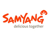
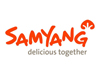

As a specialized local market, we provide authentic foods and ingredients that you need. Let us know how we can help.

 



- Rice
- Produce
- Noodles
- Sauces/Spices
- Teas
- Drinks/Snacks
- Dried/Mixes
- Frozen
- Appliances/Living
- Sushi Rice, Brown Rice, Jasmine Rice, Sweet Rice, Brown Sweet Rice, Sweet Jasmine Rice, Brown Jasmine Rice, Black Rice, Red Rice
- Kimchi, Tofu, Nappa Cabbage, Daikon Radish, Mung Bean Sprouts, Soybean Sprouts, Sweet Potato, Shanghai Bok Choi, Baby Bok Choi, Red Leaf Lettuce, Kabocha Squash, Ginger Root, Shiitake Mushrooms, Japanese Eggplant, Korean Pepper, Scallions, Lemongrass, Basil, Yuca
- Ramen, Rice Noodles, Udon, Soba, Somen, Yakisoba, Egg Noodles, Lo Mein, Buckwheat, Shirataki. Fresh noodles are also available.
- Soy Sauce, Sesame Oil, Red Pepper Paste, Red Pepper Flakes, Sriracha Sauce, Tonkatsu Sauce, Tempura Sauce, Chili Oil, Oyster Sauce, Hoisen Sauce, Fish Sauce, Sweet Chili Sauce, Sushi Ginger
- Green Tea, Oolong Tea, Barley Tea, Thai Tea, Three Ballerina Tea, Ginger Tea, Ginseng Tea
- Ramune, Rice Punch, Aloe Juice, Calpis Calpico, Pocari Sweat, Chilsung Cider, Milkis, Banana Milk, Assorted Teas & Coffees, Pocky, Pepero, Wasabi Peas, Assorted Rice Crackers, Shrimp crackers, Choco-Pie, Hi-Chew, Bean Cakes, Peeled Chestnuts
- Soup Bases, Dried Seaweed, Dried Fish, Dried Mushrooms, Rice Seasoning, Curry Base/Sauce, Sushi Seaweed, Scallion Pancake Mix, Potato Starch, Rice Powder, Frying Mix, Japanese Panko Breadcrumbs
- Beef Bulgogi, Pork Samgyupsal, Dumpling, Shumai, Fish cake/Oden, Frozen Fish, Octopus, Natto, Wonton/Dumpling Skins, Rice Cakes, Mochi, Ice Cream, Steam Buns
- Rice Cookers, Portable Butane Gas Stoves, Sushi Making supplies, Mandoline Slicer, Chopsticks, and more!
Don't see anything you were looking for? We have more products and brands! Call us at (401) 438 – 9992 with your questions.